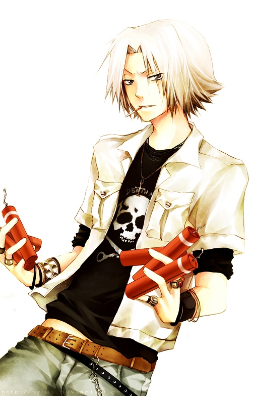
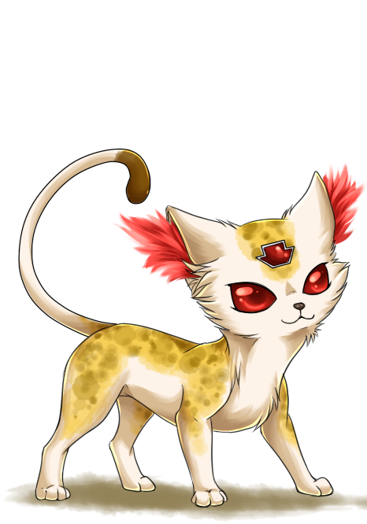

Dynamite

Sistema C.A.I.

G's Archery
Uri
| Hayato Gokudera (獄寺隼人) | |
|---|---|
| 獄寺 隼人, Gokudera Hayato | |
|  | |
| Biographical information | |
| Age | 14 |
| Birthday | September 9 |
| Physical description | |
| Gender | Male |
| Height | 168 cm |
| Weight | 54 kg |
| Blood type | B |
| Underground information | |
| Flame | Storm flame |
| Equipment | Dynamite Sistema C.A.I. G's Archery |
| Box Animal |  Uri |